What
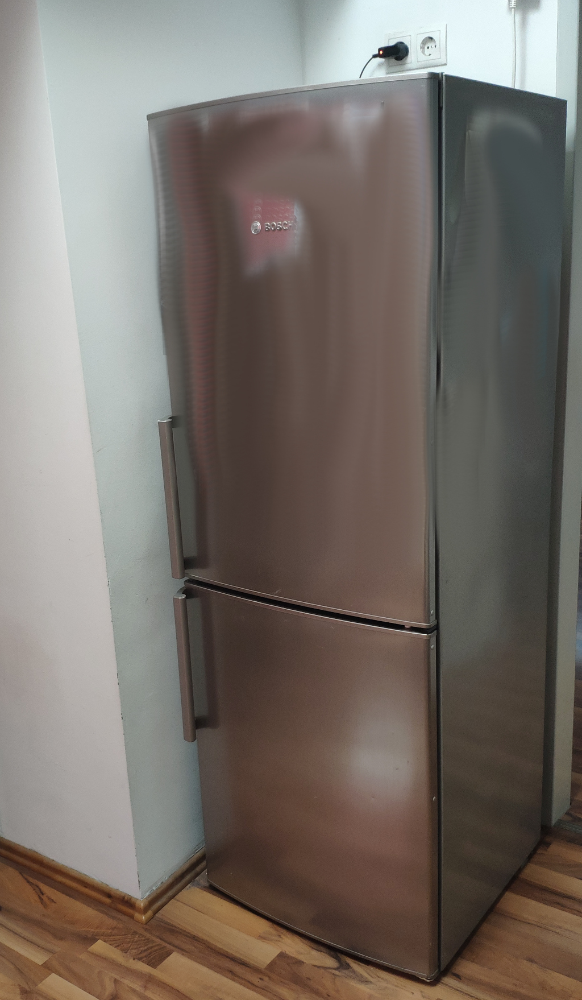Our fridge broke down. I took it apart, debugged the issue and added some smart home temperature sensors to be sure it works reliably after the repair.
Contents
When
Situation
We have an old fridge. It’s a Bosch kgn33x48. We’ve had it for about 12 years. Up until March 2023 it worked flawlessly, but then the cooling compartment reached room temperature and everything melted. Confusingly the freezer remained cool, but the cooling compartment above reached room temperature. It seems this is a common issue with these devices. Most people probably just throw the whole machine out. I’ll show below that fixing this isn’t hard.
Interestingly the freezer got even cooler than usual and the fridge, normally a no-frost fridge, iced up really quickly.
Background
How refridgerators work
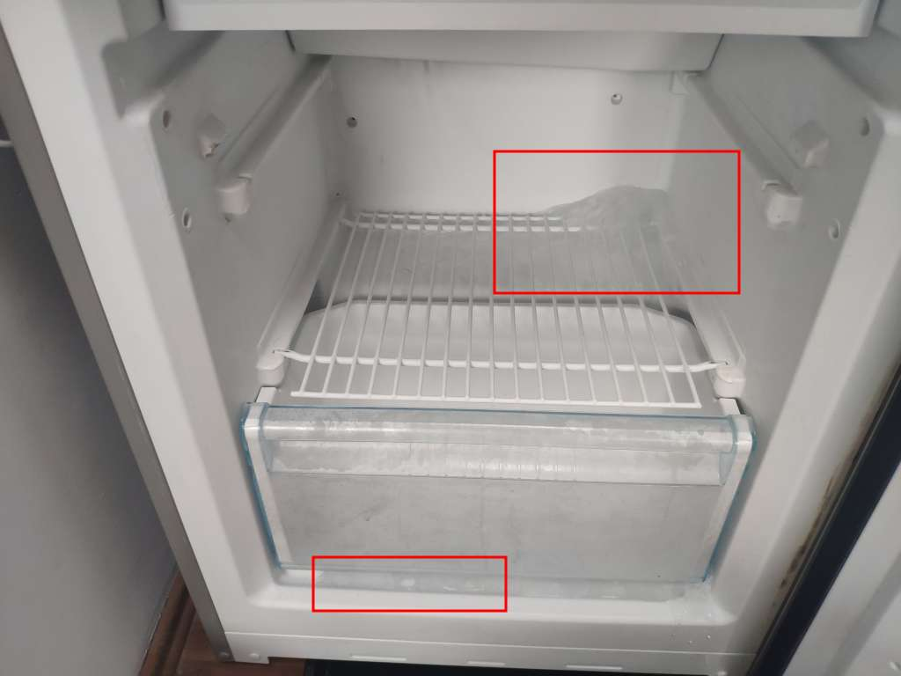Now getting rid of a fridge is a bit of a logistical nightmare, I don’t like throwing things out, didn’t want shell out the money for a new fridge and was curious why this happens - so I debugged the issue.
In order to fix the issue I’ve taken almost the whole machine apart and can now explain how these devices work.
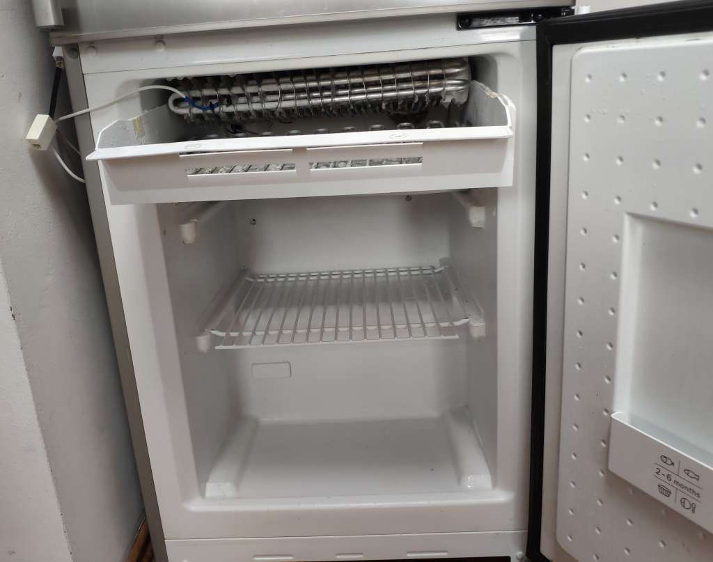Along the way I learned how these cooler/freezer-combo machines work. It turns out there is a compressor in the bottom back of the fridge. As with any cooling device, it compresses gas (the coolant). The gas is pumped through to the inside of the fridge, where it expands and causes the cooling effect.
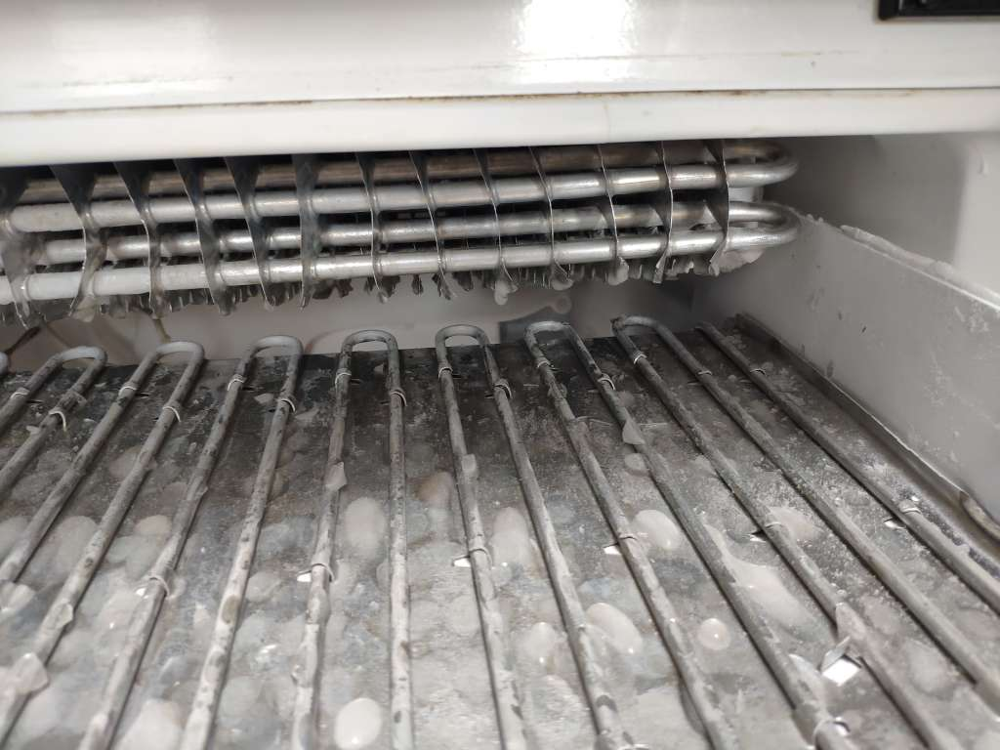For the “no-frost” feature there is actually an electric heater inside the freezer compartment alongside the grills where the coolant expands. You can see this in the image: the top fins are connected to the pipes where the coolant expands.
The bottom pipes are for the heating. Inside is essentially a wire, like in an old light bulb, a toaster or a water boiler, but that emits heat when powered.
The heat is used to melt off the ice from the coolant fins in order for the device to run more efficiently. If it didn’t have that no-frost/heating feature, then the fins would ice up, essentially thermically isolating the coolant from the contents of the freezer. The fridge would consume a lot of energy and not cool properly anymore.
Older devices had to be manually defrosted once a year or so. Modern devices run for years without any user action required.
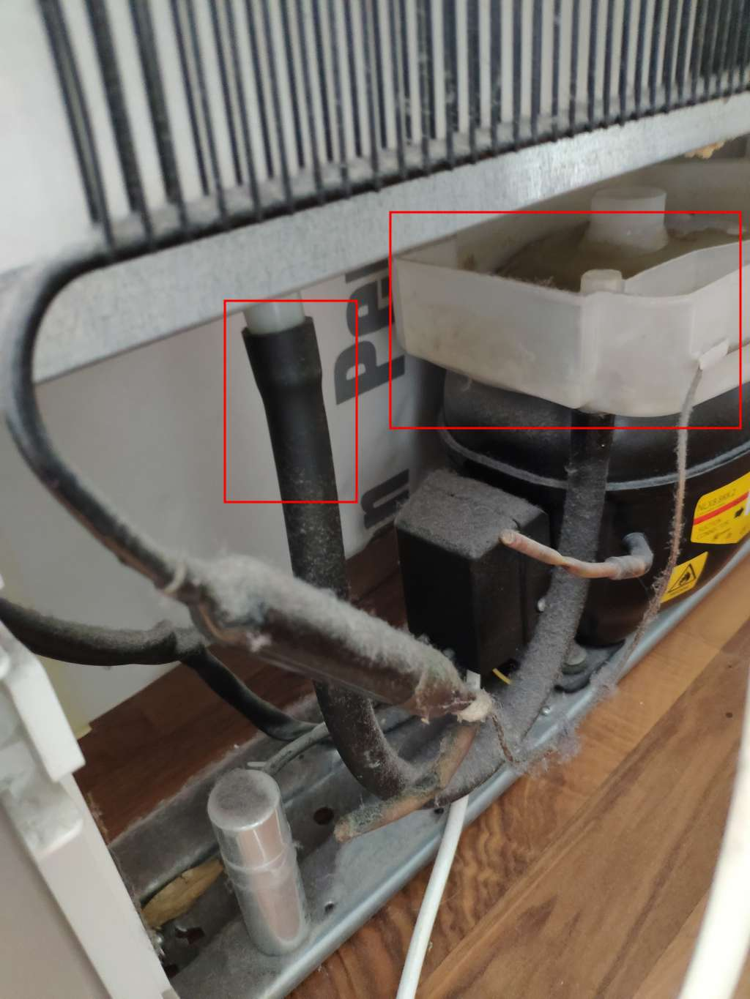In the back there is a small opening where the melded ice can flow into a tray above the compressor. The compressor produces heat - the heat pumped out of the freezer plus some mechanical loss of the compressor. The tray is placed such that the water in the tray will vaporize automatically, when the compressor runs.
The Issue
After many temperature measurments, testing the heating element, the freezer being cool, the compressor working I couldn’t find the issue at first.
Within a week or so it would ice up again and some of our food would be spoiled.
It turns out I had missed an important piece. Well two important issues actually.
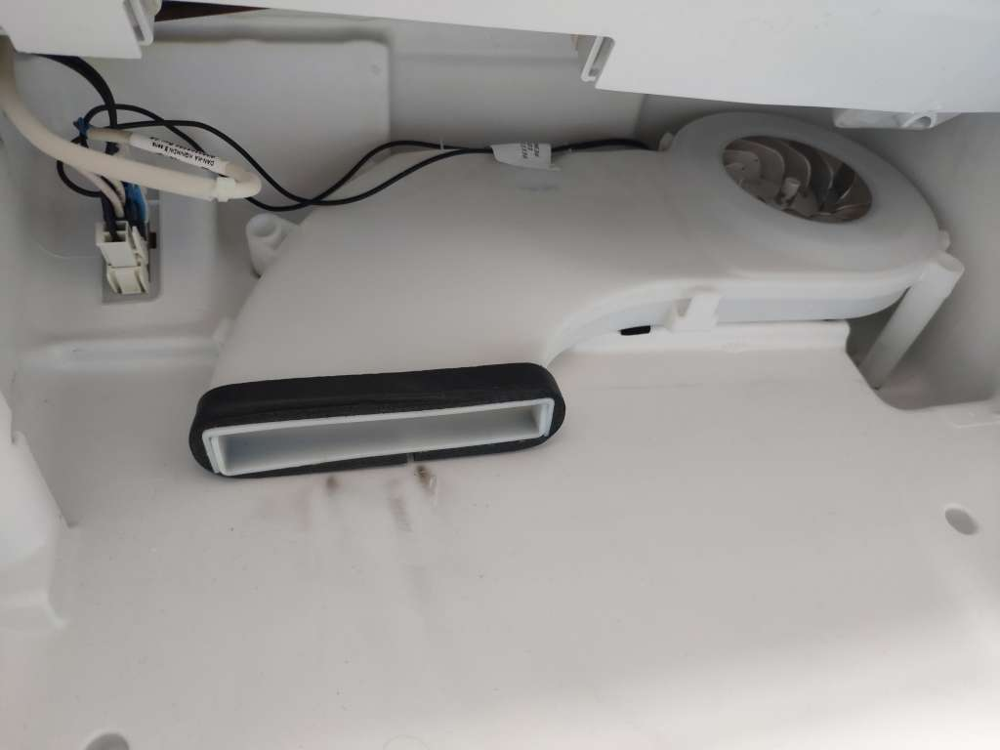The first is in the way the cooler compartment gets cooled. The cooler compartment does not have its own compressor. Cooling there happens by a small fan that blows air from the freezer compartment to the cooler compartment. There is a small air conduit behind layers of plastic and foam in the back of the fridge. The noise from this fan got more and more audible in recent years
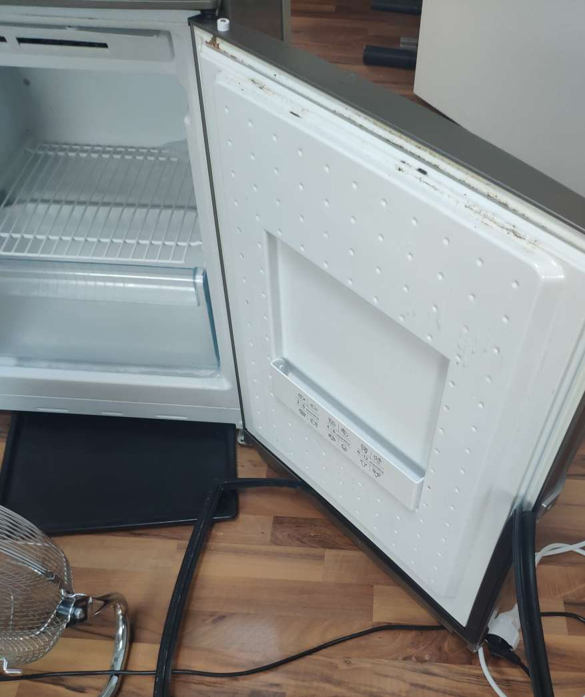What happend here is that the door seals got weak. Ambient air got into the freezer causing it to ice up. Eventually the fan that transfers the cool air from the freezer to the cooling compartment also iced up.
That is what caused the issue. Additionally that hole in the back to transfer the melted ice to the tray in the back also iced up.
Defrosting the device all the way into these air and liquid conduits takes much more time than you’d expect - especially due to the heavy isolation. And so each time we defrosted we didn’t defrost long enough to get these pipes cleared.
The Fix
After the third or fourth attempt at fixing the thing, each time pulling our half of antarctica, …
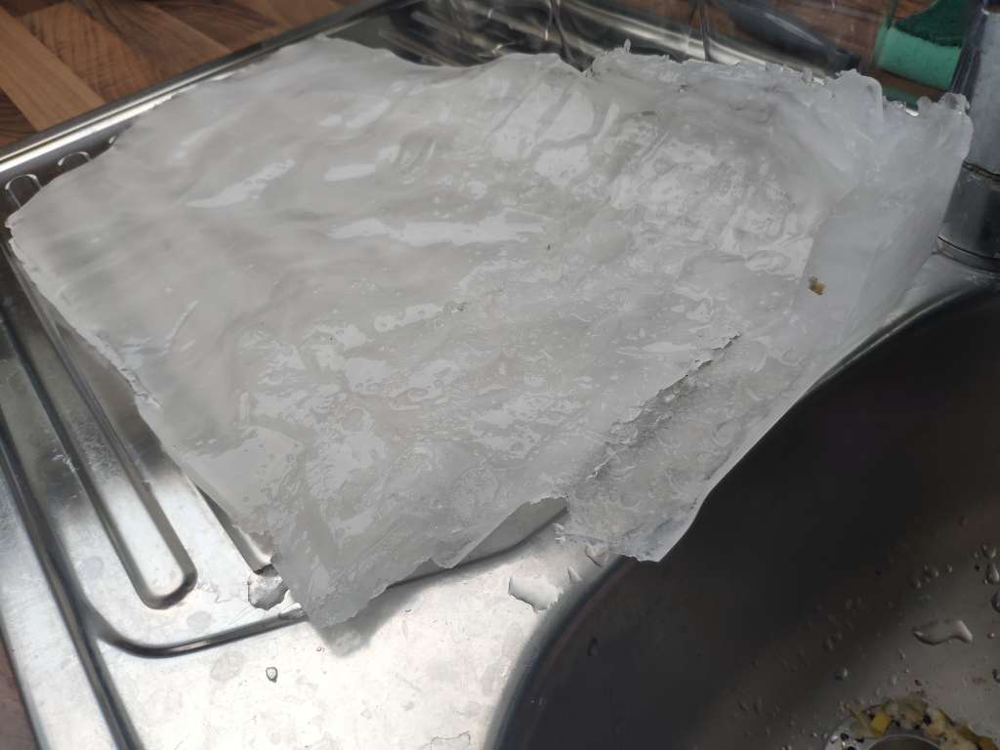and connecting tubes to pour boiling water directly into these iced up conduits
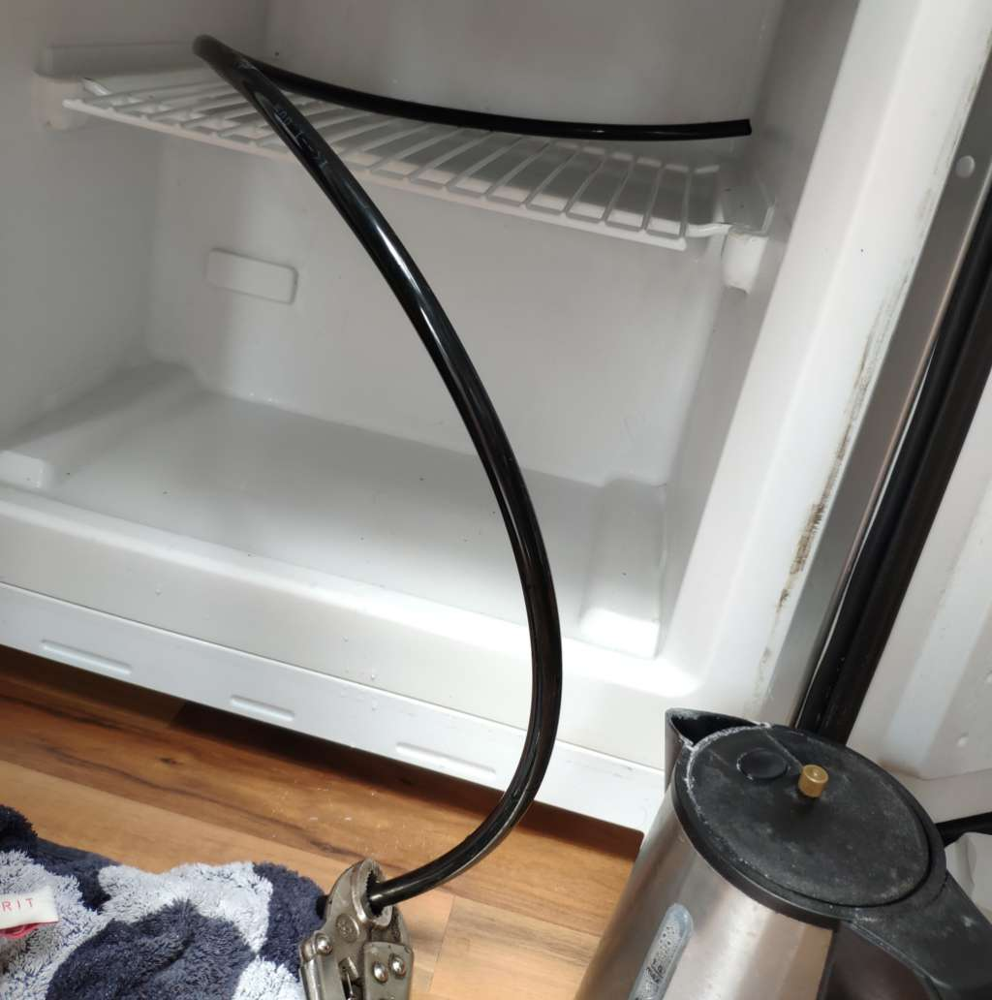the fridge worked flawlessly again and has for about year now.
Why
Adding Sensors
After and during this endeavour I had to make sure our food doesn’t get spoiled without knowing about it. If the contents of the fridge melt and then freeze again we might not be able to tell. If we consume the spoiled food we might get ourselves a nasty food poisoning.
With that in mind it was clear we need temperature sensors.
How
Electronics
For the electronics I choose the easy route with components I already had:
- pre-calibrated digital 1-Wire ds18b20 temperature sensors
- Wemos D1 Mini ESP-8266 Dev-Board
- Smartphone charger for power
The temperature sensors I’ve had since 2012 or so, from when I had a custom DIY wired Smart Home based on the 1-Wire Bus.
Back then I choose to use old rj12 telephone cabling in a ring-topology around the appartment to connect the sensors and actuators to.
Still today I use the same 1-Wire temperature sensors in RJ12 couplings or, as in this case, with the temperature sensor branched out on a long wire that I can pass through a window or into a freezer, like here.
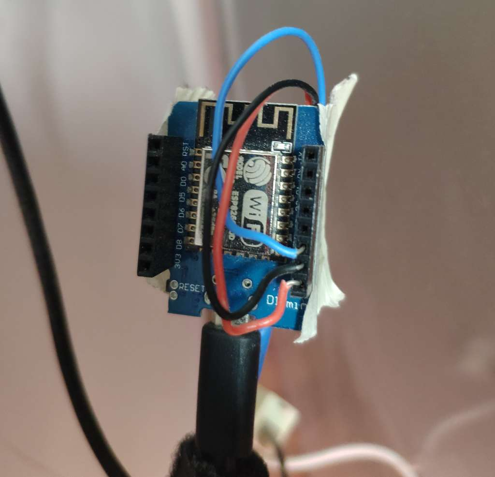The wiring is extemly simple. Vcc to Vcc, Gnd to Gnc, Data to Pin D4 (GPIO 2). I didn’t even bother to add a 4,7k Ohm resistor as suggested by the Dallas/Maxim documentation.
The Wemos D1 Mini is powerful enough to simulate a 1-Wire Bus Master in software. This works fine for 1-5 temperature sensors.
Software
With the hardware out of the way, we need the software.
My tried and proven Telegram approach
Initially, and for the past year or so, for the software, I went with the exact same approach as for my soil moisture sensors (see Plant Soil Moisture Sensors).
A 150 lines of Arduino C-Code using the “ESP8266WiFi”, “UniversalTelegramBot”, “OneWire”/”DallasTemperature” modules to spawn a Telegram Bot.
Every thirty minutes or so it spams us with chat messages to our Telegram clients, conveniently onto our mobile phones. The chat history is sufficient to be know whether our food defrosted. This approach is simple, safe, I don’t have to open any ports, don’t need a server running 24/7. It gets the job done and doesn’t have a single point of failure.
If I wanted to make a graph of the values, though, I’d have to copy the messages over from the Telegram chat to a comma-separated *.csv-file and use something like LibreOffice Calc, GnuPlot or Python with MatplotLib to create the graph.
Considering Shelly Sensors
Recently a company called “Shelly”, headquarted in Bulgaria?, entered the IoT market. A former colleague and friend recently showed me how he wired his entire apparment with Shelly-Sensors and Actuators that are interconnected with Home-Assistant on a Raspberry Pi.
Now I haven’t used them, but it seems they are very fairly priced for a pre-made solution.
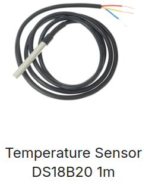You could probably combine a “Shelly Plus” power meter with an add-on board and the same ds18b20 I’m using to get an off-the-shelf solution. It will require cutting up a power cord and should probably be placed in a proper enclosure.
This might even be a bit cheaper, if you want to measure power consumption. It would cost about 20 Eur + 16 Eur + 2x3,50 Eur = 43 Eur currently here in Germany.
I’m currently running an additional FritzDect 200 Smart-Plug I still had around to measure the refridgerator power consumption. It can be bought for around 41 Eur.
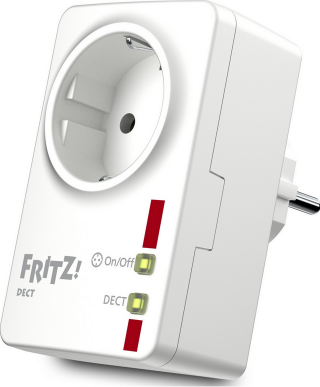EspHome standalone and HomeAssistant
In order to introduce single points of failure, but more convenience, I’ve tried out the EspHome firmware.
This is a very low-code approach. You need to install esphome.
On my Ubuntu this was sufficient:
sudo apt install pipx
pipx install esphome
There is also a web-based tool.
Then all you need is to setup a *.yaml (can be produced by calling “esphome wizard”) like so:
esphome:
name: kuehlschrank
esp8266:
board: d1_mini
logger:
api:
password: ""
ota:
- platform: esphome
password: ""
wifi:
ssid: "<wifi ssid>"
password: "<wifi password>"
ap:
ssid: "Kuehlschrank Fallback Hotspot"
password: "<...>"
captive_portal:
one_wire:
- platform: gpio
pin: GPIO02
sensor:
- platform: dallas_temp
address: 0x<...>
name: kuehlfach
update_interval: 120s
- platform: dallas_temp
address: 0x<...>
name: eisfach
update_interval: 120s
web_server:
port: 80
version: 3
In Linux I can then flash that to the chip by running
esphome run kuehlschrank.yaml
I found that
- the
compilecommand didn’t work runinstalls some required dependencies automatically- when esphome is still running you can modify the *.yaml and it will be auto-updated via the over-the-air updates, which is a cool feature.
The documentation of EspHome is a bit hard to navigate, but eventually I found out that, when enabling “api” and “web_server” with “version: 3” there is a nice minimalist web interface.
EspHome seems to generate UUIDs for the sensors. This means the address is not the 1-Wire sensor adress, but the EspHome firmware prints all found 1-Wire devices to the log, so you can find the EspHome address there.
Additionally, and this is a big benefit of EspHome, it implements Over-The-Air-Updates. This means you can change configurations on the fly from your computer without disconnecting the sensors and hooking them up to USB.
You can also get the sensor values via the Rest-API
curl http://kuehlschrank.local/sensor/kuehlfach
{"id":"sensor-kuehlfach","value":12.8125,"state":"12.8 °C"}
curl http://kuehlschrank.local/sensor/eisfach
{"id":"sensor-eisfach","value":-20.4375,"state":"-20.4 °C"}
The code is much more bloated than my own code, no telegram bot, but a web interface and a rest api. I now rely on a Raspberry Pi to grab the data, store it in a database and create graphs that are sent to Telegram via Python code on the Raspberry Pi.
Progress
Conclusion
The fridge has been working for almost a year now after the fix. The temperature sensors make sure we’re get warned in case something fails.
I’m making small steps towards a better configured smart home. In the early 2000s I had a very complex DIY 1-Wire Bus smart home. Since then I’ve been very pragmatic. I’ve tried to avoid single points of failure and keep things cheap and reusable. It is currently a mix of sensors and actuators from various manufactures and DIY solutions without any unified interface - as that would be a single point of failure.
Currently I’m running
- Philips Hue for lighting
- with Osram Smart Plug that are Hue compatible
- FritzDect 200 smart plugs for energy monitoring
- the same smart plugs are also in use to control pumps on the balcony for irrigation of the growing beds - there is no feedback with the plant soil sensors, but neither is there, when it rains.
- half a dozen of FritzDect 301 for time-based heating controls
- and esp32/esp8266 DIY boards for the refridgerator, water heater monitoring and plant soil moisture monitoring. Some send Telegram messages, some use EspHome and have the readings collected from a Python script running on a Raspberry Pi.
All in all the refridgerator repair has been a success and it goes to show how smart home technology and IoT sensors can make monitoring flacky devices to make sure they work properly more easily possible than it has been in the past.